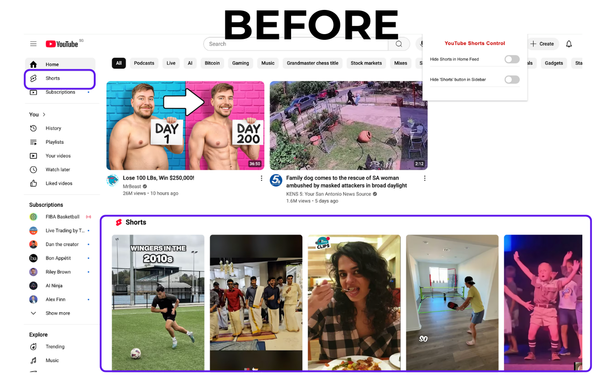
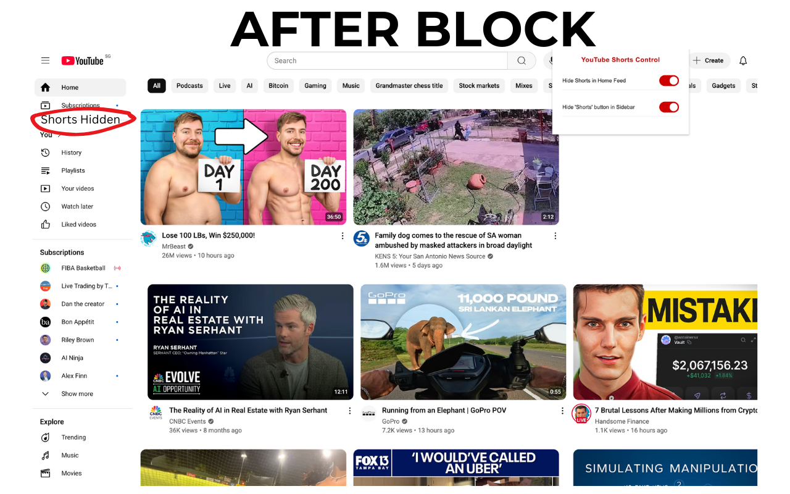

End the Endless Scroll.
Reclaim your focus and productivity with ShortsBlock, the simplest way to remove distracting YouTube Shorts from your browsing experience.
Add to Chrome - It's FreeAvailable for Google Chrome
Your YouTube, Your Rules
ShortsBlock is designed to be lightweight, effective, and completely seamless. Here's what it does for you:
Block Shorts Feed
Removes the distracting "Shorts" shelf from your YouTube homepage and subscription feed, letting you focus on the content you chose to see.
Hide Shorts Tab
Hides the dedicated "Shorts" button from the YouTube sidebar menu, preventing you from accidentally falling into the rabbit hole.
Lightweight & Fast
No bloat. ShortsBlock is a tiny, efficient extension that doesn't slow down your browser or your YouTube experience. It just works.
See The Difference
A picture is worth a thousand words. See how ShortsBlock cleans up your YouTube interface.
Before
After ShortsBlock
Ready to Take Back Your Time?
Installation takes less than 10 seconds. Get back to intentional, productive browsing today.
Add to Chrome - It's Free